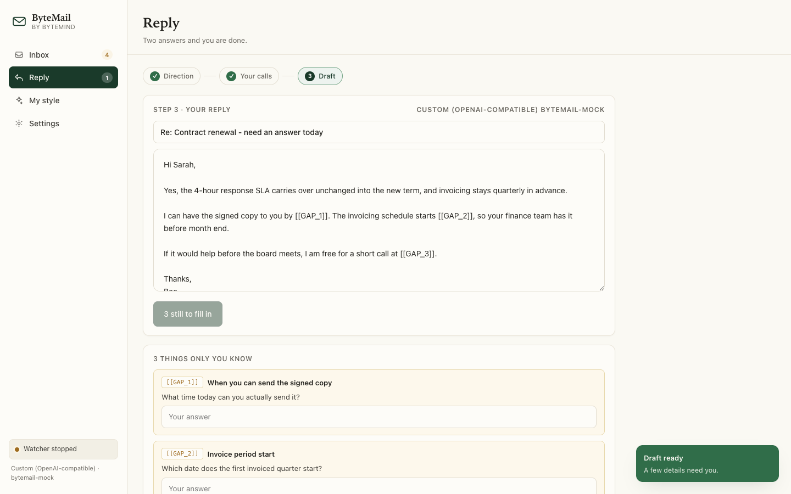

macOS 13 or later
Apple Silicon and Intel. Disk image — open it and drag ByteMail to Applications.
Download for macOSByteMail 1.2.0-beta.1 · 1.5 MB · signed as ByteMind Ltd, notarisation pending
Select the email you need to answer and press one key. ByteMail writes the reply the way you would have. Anything it cannot know stays a field for you to fill in — so nothing is invented.
macOS 13 or later · Windows 10 and 11 · no account, and it never sends mail

Each clip below is the app, two to three seconds long.
Select the email, press ⌥⌘R, and the reply streams in — in the word processor, the browser, wherever the email is sitting.
A date, a price, a promise, a name — anything it cannot know becomes a labelled field inside the draft.
Paste a few emails you wrote. ByteMail picks up your greeting, your sign-off, your sentence length, and the habits to leave out.
These clips are recorded from the app's own screen. The macOS build puts the same steps behind one shortcut and a panel over your email.
Nothing else is asked of you.
| Step | What you do |
|---|---|
| 1. Direction | Pick one of two to four genuinely different replies — Confirm both, Offer a call. |
| 2. Your calls | Answer two or three questions. Most are one click each. |
| 3. Draft | Read it, fill anything only you know, copy it. |
A chat window does not know it is answering an email. ByteMail does.
| A chat panel | ByteMail | |
|---|---|---|
| Knows it is email | No | Register, length, greeting, sign-off |
| Writes as you | No | Learned from your own samples |
| Knows who you are | No | Role, company, seniority from your profile |
| Missing facts | Invents them | Labelled fields, and Copy blocked |
| Reads the thread | No | The text around your selection |
You can check the gate yourself. The
app carries a diagnostic that needs no API key and no network —
--contracttest — and it fails if a filled field stops unlocking Copy.
No ByteMind account. No server of ours in the path.
API keys go in the macOS Keychain, or Windows' own protected store. Your profile and styles live in the app's own folder. There is no ByteMind account to make.
It reads the text you select and the text around it. Nothing else on your screen, and no mailbox it was not pointed at. Images in mail are stripped, and it tells you how many it removed.
Free, and no account to make.
Apple Silicon and Intel. Disk image — open it and drag ByteMail to Applications.
Download for macOSByteMail 1.2.0-beta.1 · 1.5 MB · signed as ByteMind Ltd, notarisation pending
ZIP package — extract it and run ByteMail.exe.
Download for WindowsByteMail for Windows 1.1.0 · 64-bit · 38 MB
The checksums, if you want to confirm what you received:
0824976a…b87207b macOS ·
065753d8…50d26955 Windows